KeyCloak Integration with Kripta Key
KeyCloak is an identity and access management product to allow user’s authentication and single sign-on (SSO) for applications.
To support strong authentication, Kripta Key provides KeyCloak Plugins that enhance SSO security by enabling seamless scan and login authentication.
This KeyCloak plugins enhance authentication on OIDC Code Authorization Flow, that implements multi-factor cryptographic authentication, which combines something the users know (user identity), something they have (mobile device), and something they are (local biometric authentication).
The KeyCloak plugins require Redis database, which is recommended to be installed on a separate machine. Another requirement is WebSocket Secure (WSS), which enables displaying the QR code on the screen.
Prerequisite
Ensure that you have installed and configured KeyCloak in production mode. Follow the instruction from KeyCloak Identity and Access Management for Modern Applications . Ensure that Keycloak is running successfully.
Install Redis on a Virtual Machine. Ensure that Redis is installed on a separate machine from Keycloak. Follow instruction on Redis installation and configuration.
As recommendation, Redis can be installed on a VM with the following specifications:
Specification
Cassandra Virtual Machine
KK-TS Virtual Machine
CPU
2 core
2 core
RAM
minimum 8GB
minimum 8GB
NIC
10GB ethernet
10GB ethernet
Operating System (OS)
RHEL 9.2
RHEL 9.2
Ensure that an email server is installed in your environment. Integrate the email server with Keycloak by clicking on Realm Settings button on the left tab, then click on Email tab.
Set the admin’s email
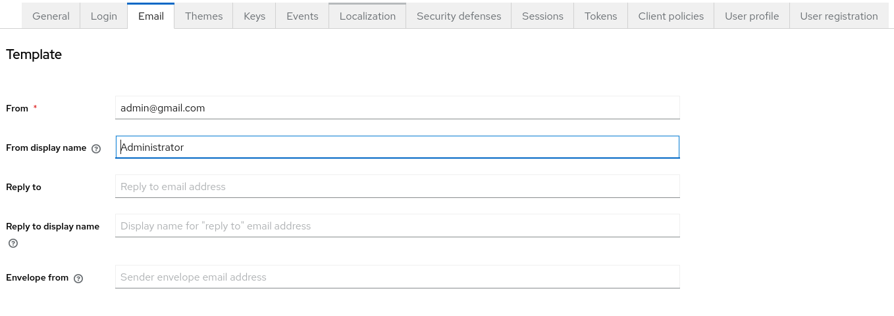Set the connection and authentication
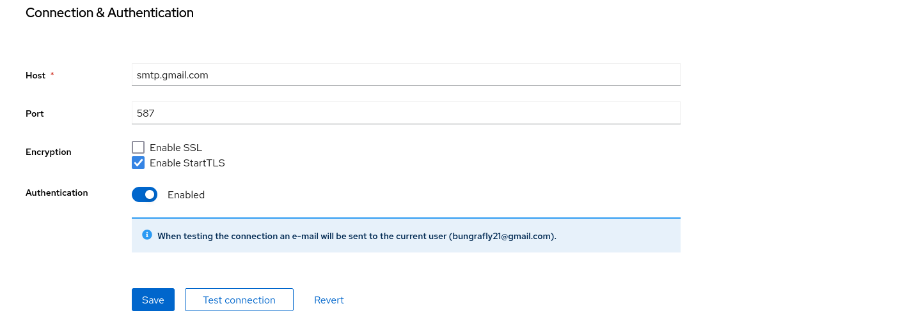
Ensure that you have installed WSS to enable showing QR code in the screen. Therefore, ensure that you also install NGINX prior to the implementation. Follow this guide to download and install NGINX. Install
wscatto enable wss with the following command:$ sudo npm install -g wscat
Configure KeyCloak with TLS
KeyCloak server must be configured with a certificate and a private key to allow KeyCloak accessed securely using TLS scenario. The certificate must be signed by a CA whether the CA is valid or a self-signed CA that can be trusted by other applications. The following are example of configuring KeyCloak with TLS v1.3:
Create a keypair for CA
$ openssl genrsa -out ca.key 4096
Create a configuration file that contains certificate detail, subject names, and extension like the following sample. You can name the file with
selfsigned.conf.[req] default_bits = 4096 prompt = no default_md = sha256 req_extensions = req_ext distinguished_name = dn [dn] C = ID ST = Some-State L = Your-City O = Your-Company CN = localhost # Ensure the CN is similar to DNS name [req_ext] subjectAltName = @alt_names [alt_names] DNS.1 = localhost # Ensure to replace with correct DNS name for CA IP.1 = 127.0.0.1 # Ensure to replace with correct IP address for CA [v3_ext] authorityKeyIdentifier=keyid,issuer basicConstraints=CA:FALSE keyUsage = digitalSignature, nonRepudiation, keyEncipherment, dataEncipherment extendedKeyUsage = serverAuth subjectAltName = @alt_names
Generate a self-signed certificate for CA and passing the configuration file.
$ openssl req -x509 -nodes -days 365 -newkey rsa:4096 -keyout ca.key -out ca.crt -config selfsigned.conf -extensions v3_ext
Generate keypair for Keycloak.
$ openssl genrsa -out keycloak.key 4096
Generate Keycloak CSR and ensure Keycloak CN is aligned to Keycloak hostname.
$ openssl req -new -key -keycloak.key -out keycloak.csr -subj "/C=US/ST=CA/L=SanFrancisco/O=MyOrg/OU=MyUnit/CN=admin-keycloak.com"
Sign Keycloak CSR with CA private key and passing the same configuration file
selfsigned.conf.$ openssl x509 -req -in keycloak.csr -CA ca.crt -CAkey ca.key -CAcreateserial -out keycloak.crt -days 825 -extfile selfsigned.conf -extensions v3_ext
Update the certificate path and private key path on
{keycloak_folder}/conf/keycloack.conffile as shown by the following example.# Basic settings for running in production. Change accordingly before deploying the server. # Database # The database vendor. #db=postgres # The username of the database user. #db-username=keycloak # The password of the database user. #db-password=password # The full database JDBC URL. If not provided, a default URL is set based on the selected database vendor. #db-url=jdbc:postgresql://localhost/keycloak # Observability # If the server should expose healthcheck endpoints. #health-enabled=true # If the server should expose metrics endpoints. #metrics-enabled=true # HTTP # The file path to a server certificate or certificate chain in PEM format. https-certificate-file=${kc.home.dir}/conf/raihan-keycloak-rumah.com.crt # The file path to a private key in PEM format. https-certificate-key-file=${kc.home.dir}/conf/raihan-keycloak-rumah.com.key # The proxy address forwarding mode if the server is behind a reverse proxy. #proxy=reencrypt # Do not attach route to cookies and rely on the session affinity capabilities from reverse proxy #spi-sticky-session-encoder-infinispan-should-attach-route=false # Hostname for the Keycloak server. #hostname=myhostname
Important
Ensure that Keycloak hostname must match to the CN registered in Keycloak certificate. To set the hostname, edit file
etc/hostnameand set the IP address including the hostname assigned to that IP.Trust a CA self-signed certificate in browser.
Integrate KK Plugins to KeyCloak
In order to allow Keycloak, as the SSO server, to authorize client applications and securely authenticate users, KK Plugins enhance security by ensuring that authentication ends in a trusted environment. Additionally, this end-to-end authentication scenario, from mobile device to Kripta Key (KK), uses the user’s device as a unique identifier.
Put the plugins into KeyCloak directory, specifically in folder
providers.$ cp $(pwd)/keycloak-1.0-SNAPSHOT.jar ~/kc-book/keycloak-26.1.1/providers
Create configuration file which contents listed on the following sample. It is recommended to put the file in the same folder with KeyCloak configuration file. Name the file with
kkconfig.properties. Declare the location of the configuration file when the KeyCloak start.kk.kkcs.host=10.21.0.8 kk.kkcs.port=7004 kk.kkcs.keystore.file=/tmp/TEST_Keystore.p12 kk.kkcs.keystore.password=12345 kk.kkcs.partition.id=1 kk.kkcs.partition.password=Klavis1! kk.kkcs.keyid.certsign=04rsa4096 kk.kkcs.keyid.wrapping=02aes kk.kkcs.keyid.permanent=01aes kk.redis.host=10.21.0.8 kk.redis.port=6379 kk.redis.maxconn=32 kk.redis.minidleconn=8 kk.redis.maxidleconn=16 kk.redis.usessl=false kk.redis.keystore.file= kk.redis.keystore.password= kk.redis.username= kk.redis.password= kk.redis.database= kk.qrcode.websocket.port=8082 kk.qrcode.websocket.proxiedport=8081 kk.qrcode.logo.file=/home/klavis/Pictures/cropped-kk-favicon-png.png
Run KeyCloak.
$ bin/kc.sh start -Dkk.config.properties=/home/klavis/Documents/WorkingDir/kc-auth/test/resources/kkconfig.properties -Djdk.internal.httpclient.disableHostnameVerification=true
Verify Plugins Integration
Now, you can open Keycloak admin console by typing Keycloak URL https://admin-keycloak.com:8443. Login to Keycloak by using
admin’s credential. You can verify whether the provider is successfully integrated by doing the following steps:
Go to your specific realm and then click Authentication button on the left tab.
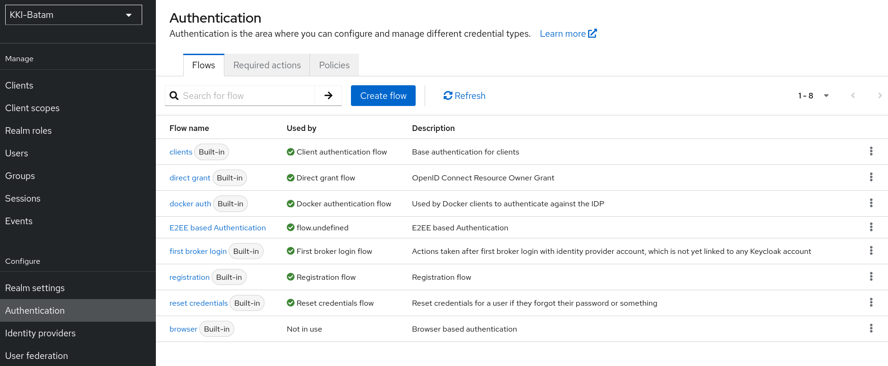Click one of the flows, e.g., browser and then click Add step button.
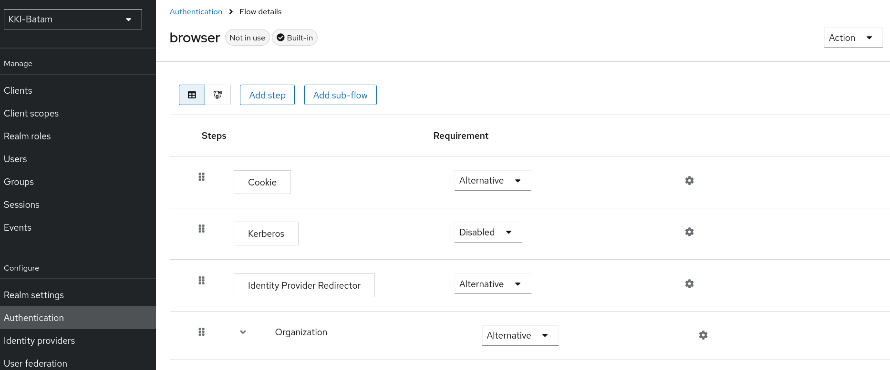Type E2EE in search column, and ensure that E2EE options are available there.
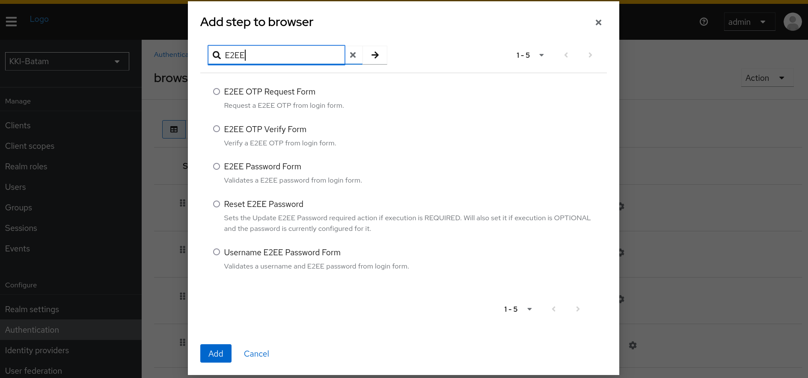
Create E2EE Authentication Flow
If the provider is integrated successfully, create a new authentication flow that enable E2EE based authentication flow. To create the flow, you can follow the following steps:
Choose the browser flow name and click the three dots, click Duplicate.
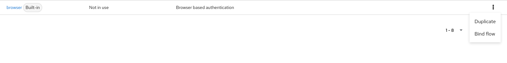Name the new authentication flow as follows:
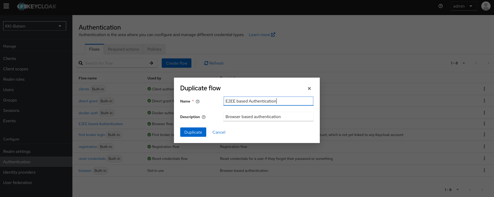Back to the Authentication page, and click on E2EE based authentication you just created.
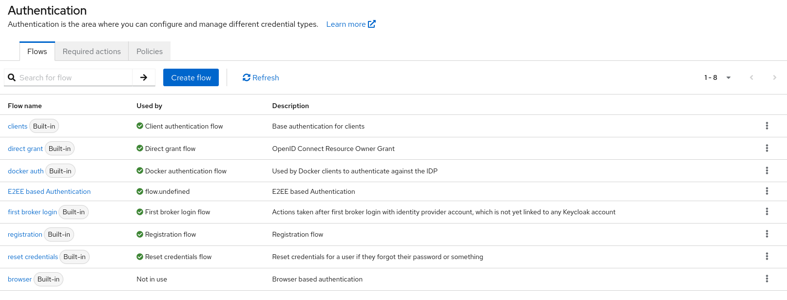Create the flows as shown by the figure below:
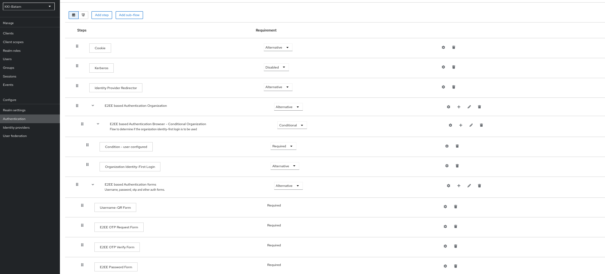Go back to Authentication page, click Required actions tab, and ensure that you enable Update E2EE Password and Update E2EE Certificate
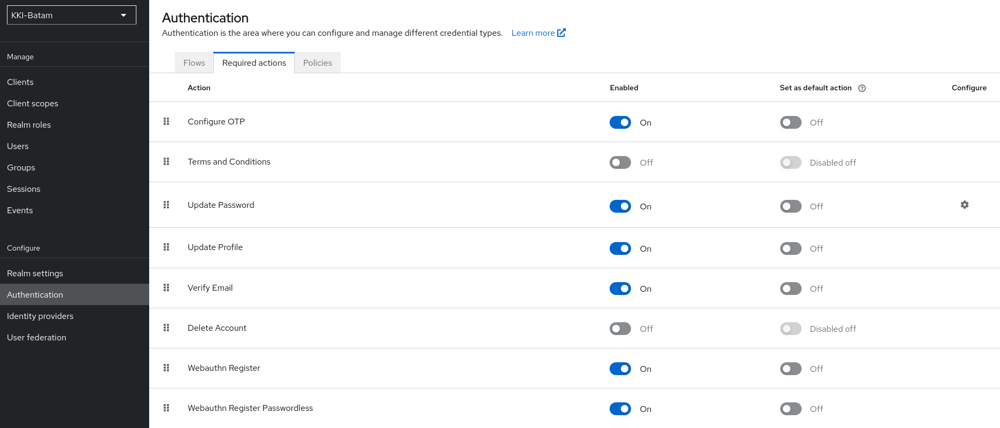 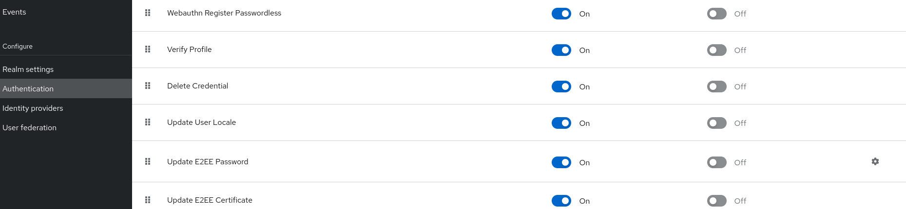Go back to Flows tab and bind E2EE based Authentication flow by clicking on the three dots and click on Bind
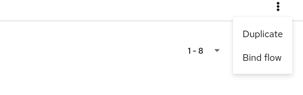